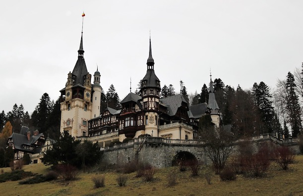
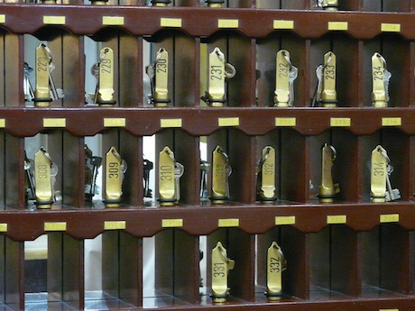

Expériences
Stage réceptionniste de nuit
Hôtel Four Seasons, Paris, France
- - Accueil et renseigne le client sur les conditions de séjour
- - Effectuer les tâches administratives sur les dossiers cients
- - Superviser et coordonner les activités du personnel
2021


2020
Stage réceptionniste de nuit
Empreinte Hôtel, Orléans, France
- - Accueil et renseigne le client sur les conditions de séjour
- - Effectuer les tâches administratives sur les dossiers cients
- - Superviser et coordonner les activités du personnel
Oenologue en production viticole
Château de Bran, Région Tansylvanienne, Roumanie
- - Oenoloque en production familiale, les 'Vins Tepes'
- - Vinification, amélioration de la qualité du vins
- - Dégustations de vins
Depuis 1476

Formation

2019
Bac technique: Réceptionniste en hôtellerie
AFPA, Tours
Apprenti dans l'entreprise familiale, les 'Vins Tepes'
Château de Bran, Région Tansylvanienne, Roumanie
1476